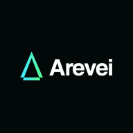

Your business, connected.
Arevei brings your leads, projects, tasks and business knowledge together with an AI Manager that helps you get work done.
Open workspaceGet started
- Sign in and open your workspace.
- Choose Agent Mode and tell your AI Manager what you need. Try “Review my leads and suggest who needs attention.”
- Read the response. On mobile, tap See it working below the chat box to review actions and team activity.
- Use Human Mode to browse records and manage your workspace directly.
Keep Arevei on your home screen
On iPhone or iPad, open this site in Safari, tap Share, then Add to Home Screen. On Android or desktop, use your browser's Install app option.
Connection and app status
- Connection
- Checking...
- App mode
- Checking...
- Offline guide
- Preparing...
This guide is available offline once saved. Chat, workspace data and AI actions need an internet connection.